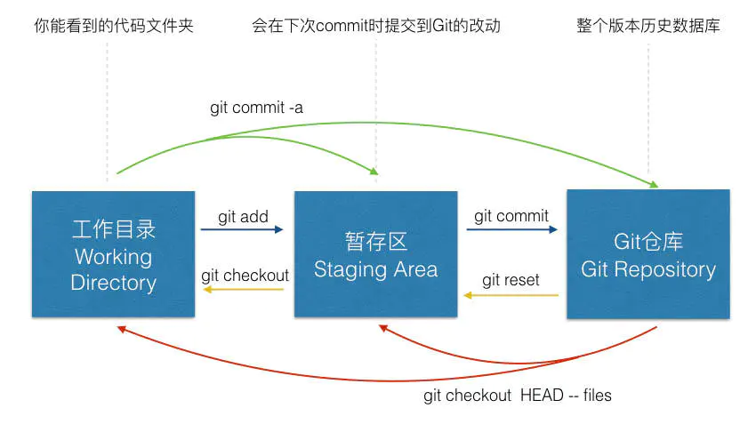

An Introduction to Git
1. git config pull.rebase 完整配置指南
控制执行 git pull 时，如何处理本地与远程分叉（divergent branches）的整合策略。
1.1. 三种配置模式
1.1.1. 1. false（默认行为）- Merge 模式
1 | git config pull.rebase false |
效果：
本地提交和远程提交合并（merge），产生一个额外的 “Merge branch…” 提交节点，历史呈 “Y” 型分叉结构。
适用场景：
- 团队协作项目（保留完整上下文，谁做了什么一目了然）
- 需要保留并行开发历史的记录
- 公共分支（master/main）的标准操作
结果图示：
1 | A---B---C---M (merge commit) |
1.1.2. 2. true - Rebase（变基）模式
1 | git config pull.rebase true |
效果：
把你的本地提交摘下来，在远程最新提交之后重新应用，生成新的 commit ID（内容不变，但 hash 变了），历史保持直线。
适用场景：
- 个人项目（如 dotfiles）：历史看起来像 “先 pull 后修改”，整洁无分叉
- 补救 “忘记先 pull 就修改” 的场景，避免产生 merge commit
- 功能分支开发完毕合并前，整理提交历史
结果图示：
1 | A---B---C---D' (重新应用后的提交) |
⚠️ 重要警告：
已推送到远程的提交不要 rebase，会改变 commit ID，导致与他人冲突。仅用于本地未推送的提交整理。
1.1.3. 3. only - Fast-forward only（仅快进）
1 | git config pull.ff only |
效果：
遇到分叉直接拒绝 pull，强制你先手动处理（stash、reset 或显式指定策略）。最安全，不会自动产生意外合并。
适用场景：
- 对 Git 不熟悉，担心自动合并带来混乱
- 仓库有严格提交规范，禁止自动合并
- 需要强制养成 “先 pull 再工作” 的习惯
结果：
如果本地有提交未推送，远程也有更新，pull 直接报错，强制你显式选择 merge 或 rebase。
1.2. 配置对比表
| 配置 | 历史形状 | 产生新提交 | 风险 | 适用 |
|---|---|---|---|---|
false (merge) |
分叉（Y型） | 多一个 merge commit | 历史复杂 | 团队协作 |
true (rebase) |
直线 | 改写已有 commit ID | 仅改写本地 | 个人开发 |
only (ff-only) |
无操作 | 无 | 需手动解决 | 保守/新手 |
1.3. 快速设置命令
1 | # 查看当前配置 |
个人仓库：
推荐设置 git config pull.rebase true，这样多台电脑间的同步历史是条干净的直线，就像你 sequentially 工作一样。今天 “忘记 pull” 的情况用 rebase 解决，完全等价于 “先 pull 再修改” 的理想流程。
团队协作仓库：
保持默认 false 或显式设置 false，保留 merge commit 作为"协作证据"，方便追溯哪些提交是并行开发的。
新手过渡期：
可先设 only，强制自己养成习惯，遇到分叉时显式思考该 merge 还是 rebase，熟悉后再改配置。
2. GitHub Fork 协作完整指南：从 Fork 到 PR 的最佳实践
本文详细记录如何正确参与开源项目维护，包括环境配置、分支管理、代码提交及清理流程。
2.1. 初始配置：连接上游仓库
当你 Fork 了别人的仓库后，clone fork后的仓库到本地，第一步是建立与原始仓库的连接：
1 | # 查看当前远程仓库 |
2.2. 日常开发流程
2.2.1. 步骤 1：同步上游最新代码
每次开发新功能前，务必先同步，避免代码冲突：
1 | git checkout main |
2.2.2. 步骤 2：创建功能分支
关键原则：一个功能一个分支，基于最新 main 创建
1 | # 确保在 main 分支且已同步 |
⚠️ 常见错误：不要基于旧功能分支创建新分支，否则 PR 会包含无关代码。
2.2.3. 步骤 3：开发与提交
1 | # 进行代码修改... |
2.2.4. 步骤 4：创建 Pull Request
-
打开 GitHub 页面，点击 "Compare & pull request"
-
检查合并方向：
- base: 原作者/main ← compare: 你的fork/feature分支
-
填写 PR 描述模板：
1
2
3
4
5
6
7
8
9
10
11
12
13
14
15
16
17## 描述
简要说明改动内容
## 改动类型
- [x] 新功能
- [ ] Bug 修复
- [ ] 文档更新
## 测试
描述如何测试这些改动
## 关联 Issue
Fixes #123 -
提交 PR 并等待审查
2.3. 分支生命周期管理
2.3.1. 合并后清理（重要！）
PR 被合并后，立即清理分支，保持仓库整洁：
1 | # 切换到 main 并同步最新代码 |
2.3.2. 完整流程图
1 | ┌─────────────┐ ┌─────────────┐ ┌─────────────┐ |
2.4. 实用命令速查表
| 场景 | 命令 |
|---|---|
| 查看远程仓库 | git remote -v |
| 添加 upstream | git remote add upstream <url> |
| 同步上游代码 | git fetch upstream && git merge upstream/main |
| 创建并切换分支 | git checkout -b feature/xxx |
| 推送分支 | git push origin feature/xxx |
| 删除本地分支 | git branch -d feature/xxx |
| 删除远程分支 | git push origin --delete feature/xxx |
| 查看所有分支 | git branch -a |
| 清理已合并分支 | git branch --merged \| grep -v "main\|*" \| xargs git branch -d |
2.5. 关键原则总结
- 永远基于
main创建新分支，不要在旧功能分支上继续开发 - 一个分支只做一件事，保持 PR 小而专注
- 合并后立即删除分支，分支是临时的、廉价的
- 定期同步上游代码，减少冲突可能性
- 写清晰的 commit 信息，便于追溯历史
2.6. 常见问题
Q: 分支会越建越多吗？
A: 不会。遵循"用后即删"原则，合并后立即删除，保持仓库整洁。
Q: 可以在同一个分支上提交多个功能吗？
A: 强烈不建议。这会导致 PR 难以审查，且一个功能有问题会阻塞其他功能合并。
Q: 如果 PR 被拒绝或需要修改怎么办？
A: 在原有分支上继续提交修改，git push 后会自动更新到 PR 中，无需新建 PR。
💡 提示：将常用命令配置为 Git alias 可大幅提升效率，例如
git sync一键同步上游代码。
3. Modify the .gitignore file
Changes to .gitignore only apply to untracked
files — it won’t ignore files that Git
is already tracking. To enforce the new
rules on all files, run the following commands:
1 | git rm -r --cached . |
4. The Structure of Git

git checkout 用于切换分支或恢复工作数文件，它是一个危险的命令，因为这条命令会重 写工作区。
git ls-files 查看缓存区中文件信息，它的参数有，括号里面是简写
–cached (-c) 查看缓存区中所有文件
–midified (-m)查看修改过的文件
–delete (-d)查看删除过的文件
–other (-o)查看没有被 git 跟踪的文件
5. Get back to an old version
git log can show the history of your commit.
git reset xxx will git back to an old version. However, the workspace will not
change, i.e., the workspace is also the current workspace.
git reset --hard xxx will get back to an old version, and the workspace will
be also the old version.
To get back to the newest version git reflog can show the reference logs
information. It records when the tips of branches and other references were
updated in the local repository. The code of the newest version will be
observed.
6. Clone too slow
The network speed of git clone is often very slow in China mainland. To
improve the speed, I often clone by ssh, i.e., use the ssh link instead of
https link. However, it need to change the link. Use
git config --global url."https://mirror.ghproxy.com/https://github.com".insteadOf https://github.com
can download repos fast without changing the links. It will write some thing in
the ~/.gitconfig file.
When the .gitconfig file is
1 | [user] |
If you clone a repo by git clone https://github.com/xxx/xxx.git, it will
actually clone from https://mirror.ghproxy.com/https://github.com/xxx/xxx.git.
Thus the mirror is used.
However, it may cause some trouble when git push is used for your own repos.
Use ssh will work fine for it only replace https://github.com and ssh uses
git@github. The url in .gitconfig file have no effect on ssh push/clone or
pull.
7. .git folder is too big
Usually .git/objects/pack folder is contain three files.
.packfile which contain all the commit information..idxfile is the index of the history in.packfile..revfile is related to the reverse index information.
Use the following snippets to shrink the .git folder:
1 | # list the biggest 10 files. |